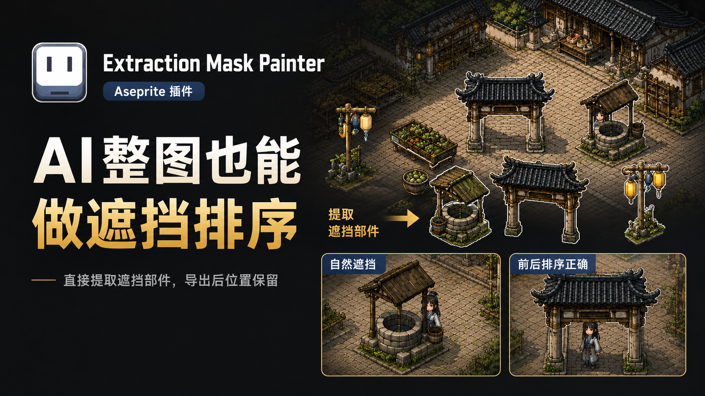

CE Extraction Mask Painter
一个 Aseprite 插件, 用来从 AI 生成或手绘的完整场景图中标记遮挡物体, 并按原图位置导出透明素材和 JSON 信息.
下载插件
v1.0.0 · Aseprite Extension

这个插件解决什么问题
做 2D 场景遮挡时, 经常需要把树冠、屋檐、水井、摊位等物体拆成单独素材, 再重新拼回场景. CE Extraction Mask Painter 的目标是省掉手动拆图和重新对齐的过程: 在原图上画出每个需要参与遮挡排序的区域, 插件会从原图相同位置抠出透明素材.
适合的工作流
- 先用 Aseprite 打开需要处理的场景图, 并另存为 Aseprite 工程文件.
- 通过
Sprite / OldKing / Extraction Mask Painter打开插件面板. - 每个遮挡物体创建一个独立 Mask 图层, 例如水井、树冠、屋檐或摊位.
- 用 Aseprite 自带绘图工具把需要抠出的物体完整涂出来, 不是只画轮廓线.
- 导出后得到透明素材和同名 JSON, 后续可在游戏工程里按 JSON 还原位置并接入动态排序.
导出结果
插件会在原图同级目录创建导出文件夹. 通过 Mask 图层提取的透明 PNG 会放在这个文件夹中, 同时生成一个记录素材位置和相关信息的 JSON 文件. 这些素材保留原图中的像素位置, 方便在 Unity、Godot、自研引擎或其他 2D 项目中恢复场景遮挡层.
安装方式
- 点击上方下载按钮获取
.aseprite-extension.zip文件. - 双击下载的扩展包, 按 Aseprite 提示完成安装.
- 重启或回到 Aseprite 后, 从顶部菜单进入
Sprite / OldKing / Extraction Mask Painter.